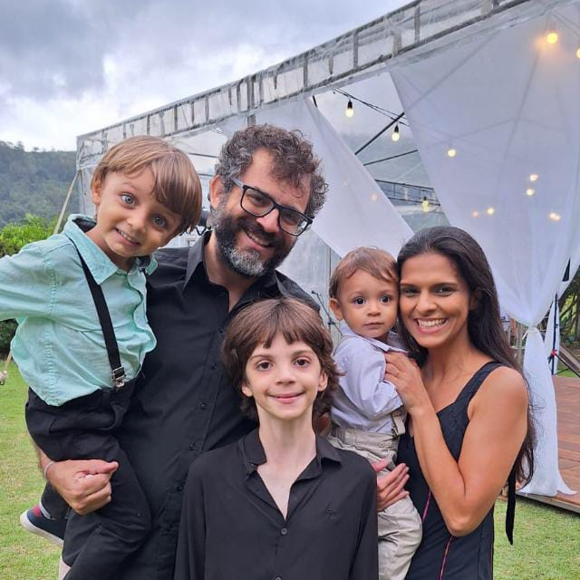
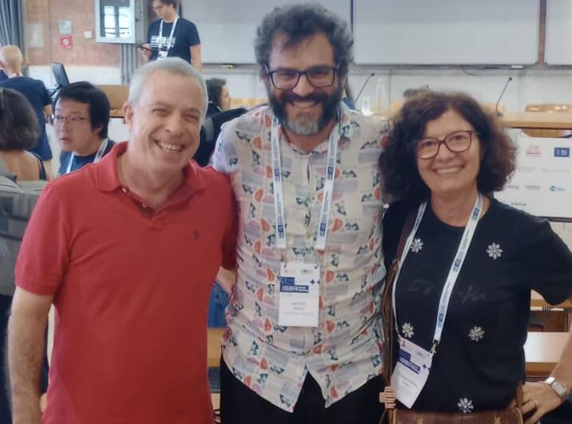

Short bio
I am an applied Bayesian (bio)statistician holding a permanent research position at the Scientific Computing Programme PROCC, Oswaldo Cruz Foundation Fiocruz, Rio de Janeiro, Brazil since December 2012. And since 2025, a part-time associate professor at IMPAtech teaching statistics realted courses. I am a CNPq fellow (bolsa de produtividade) and a FAPERJ fellow scientist (Cientista Nosso Estado). I am an elected member of ISI and a registered statistician at the Brazilian Statistical Council CONRE2.
I spent a sabbatical period (2019-2020) in London working on infectious disease modelling at the Department of Infectious Disease Epidemiology and in the CMMID in the London School of Hygiene and Tropical Medicine LSHTM, UK.
My main research interests are on developing Bayesian statistical solutions/models to applied problems, usually research questions related to infectious diseases epidemiology. Last but not least, I am a father of three boys and a husband. My wife is a lecture of epidemiology and statistics at IFRJ, we also have a couple of papers and projects together.

Prof Rosangela Loschi (UFMG) and Prof. Dani Gamerman (UFRJ) played a very important role in my academic career. I never thought I would leave Belo Horizonte and thanks to Rosangela I moved to Rio de Janeiro to start my MSc in Statistics under Dani’s supervision. And then I realized that I should try to do a PhD abroad and Dani (and other professors at UFRJ like Hedibert Lopes, Alexandra Schmidt and Helio Migon) supported me to apply for PhD abroad which I did in the UK.

Students and collaborators awards
- First place to Guilherme Silva in the Master dissertation award at the 25th SINAPE, 2024.
- Honour mention to Fernanda Oliveria’s PhD thesis in the 2023 Oswaldo Cruz Thesis Award (Prêmio Oswaldo Cruz de Teses 2023) in the category Population Health, 2023.
- Best hemotherapy paper at the HEMO2022, Congresso Brasileiro de Hematologia, Hemoterapia e Terapia Celular, 2022.
- Honour mention to Gisele V. Rocha paper at the IV Escola Brasileira de Modelagem Molecular (EBMM) , 2017.
- Second place to Natalia Paiva in the Scientific Initiation award at the 20th SINAPE, 2012.
Important links:
- Bayesian Statistical softwares
- INLA: http://www.r-inla.org/
- Stan: https://mc-stan.org/
- Nimble: https://r-nimble.org/
- Brazilian microdata:
Random stuff
- My Erdős Number is 4: Bastos > O’Hagan > Leonard > Taylor > Erdős (Calculate yours: Link)
- Curiosity note: A list of my academic ancestors: O’Hagan, Lindley, Barnard, Poisson, Lagrange, Laplace, Euler, Bernoulli
- My profile in the Mathematics Genealogy project
- I am a Taekwondo student holding a 1st DAN black belt. My masters are:
Master Erico Soares (4th DAN)
Grandmaster Renato Ribeiro (7th DAN).
Belt exam, 2015.